Introduction to robvis, a
visualization tool for risk-of-bias assessments
Luke A McGuinness
2024-04-25
Source:vignettes/Introduction_to_robvis.Rmd
Introduction_to_robvis.RmdIntroduction
The robvis package provides functions to convert a
risk-of-bias assessment summary table into a summary plot or a
traffic-light plot, formatted based on the specific risk-of-bias
assessment tool used.
robvis currently contains templates for the following
tools:
- ROB2
- ROBINS-I
- QUADAS-2
- ROB1
Users can find the exact assessment tool name expected by the
tool argument of the rob_summary() and
rob_traffic_light() functions by running:
rob_tools()
#> Note: the "ROB2-Cluster" template is only available for the rob_traffic_light() function.
#> [1] "ROB2" "ROB2-Cluster" "ROBINS-I" "ROBINS-E" "QUADAS-2"
#> [6] "QUIPS" "Generic"Loading your data
robvis expects certain facts about the data you provide
it.
- The first column contains the study identifier
- The last column will contain the overall risk-of-bias judgments
- The first row of the data does not contain column headings. This can
be achieved using the
header = TRUEoption (which indicates that the first line contains column headings) when reading in your summary table:
data <- read.csv("path/to/summary_table.csv", header = TRUE)All other columns are expected to contain the results of the risk-of
bias assessments for a specific domain. To elaborate, consider as an
example the ROB2.0 tool which has 5 domains. The resulting data set that
robvis would expect for this tool would have 7 columns:
- Column 1: Study identifier
- Column 2-6: One RoB2 domain per column
- Column 7: Overall risk-of-bias judgments
The only exception to this is the "Generic" template,
which is discussed below.
Example data sets
To help users explore robvis, we have included an
example data set for each tool template that exists in the package. For
example, the data_rob2 data set, which contains example
risk-of-bias assessments performed using the RoB2.0 tool for randomized
controlled trials, is presented below:
| Study | D1 | D2 | D3 | D4 | D5 | Overall |
|---|---|---|---|---|---|---|
| Study 1 | Low | Low | Low | Low | Low | Low |
| Study 2 | Some concerns | Low | Low | Low | Low | Some concerns |
| Study 3 | No information | Low | Some concerns | Low | Low | Some concerns |
| Study 4 | Low | Low | High | Low | Some concerns | High |
| Study 5 | High | High | Low | Low | Some concerns | High |
| Study 6 | Low | High | Some concerns | Low | Low | High |
| Study 7 | Low | Some concerns | Some concerns | High | Low | High |
| Study 8 | Low | Some concerns | Low | Low | Low | Some concerns |
| Study 9 | Low | Low | High | Low | Low | High |
Summary plots (rob_summary())
This function returns a ggplot object displaying a
weighted bar-chart of the distribution of risk-of-bias judgments across
the domains of the specified tool.
Examples:
ROBINS-I tool for non-randomized studies of interventions
rob_summary(data_robins_i, tool = "ROBINS-I")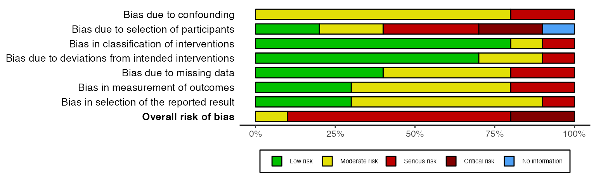
rob_summary() options
Overall risk-of-bias judgments (overall)
By default, a bar representing the overall risk-of-bias judgments is
not included in the plot. If you would like to include this, set
overall = TRUE. For example:
rob_summary(data_rob2, tool = "ROB2", overall = TRUE)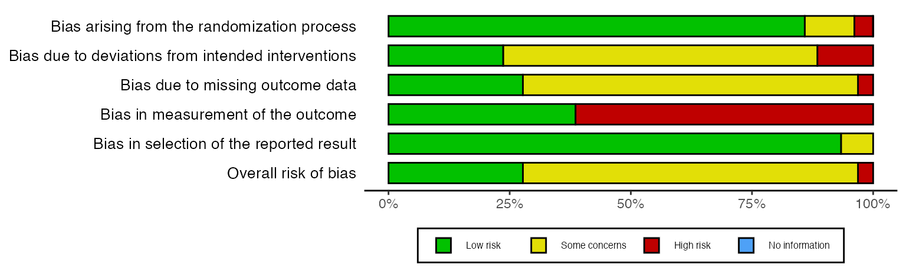
Weighted or un-weighted bar plots (weighted)
By default, the barplot is un-weighted, in that it shows the number of studies at each level of risk of bias. However, if you provide a risk-of-bias dataset that has an additional “Weights” column containing some measure of study precision, you can produce a barplot showing the amount of statistical information at each level of bias:
data_rob2_weighted <- data_rob2
# Assign a random number between 1 and 10 as the weight for each study
data_rob2_weighted$Weights <- sample(1:10,9)
# Produce a weighted barplot
rob_summary(data_rob2_weighted, tool = "ROB2", weighted = TRUE)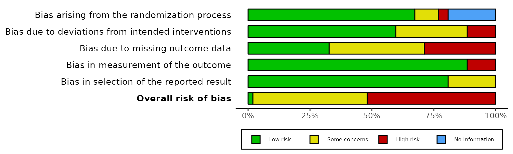
See the “Working with
metafor” article for more information on how to extract
the weights assigned to each study during a meta-analysis performed with
metafor
Colour scheme (colour)
NB: Please note the non-US English spelling of colour
The colour argument of both plotting functions allows
users to select from two predefined colour schemes, “cochrane” (default)
or “colourblind”, or to define their own palette by providing a vector
of hex codes.
For example, to use the predefined “colourblind” palette:
rob_summary(data = data_rob2, tool = "ROB2", colour = "colourblind")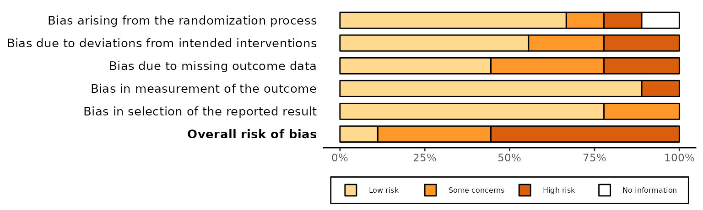
And to define your own colour scheme:
rob_summary(data = data_rob2, tool = "ROB2", colour = c("#f442c8","#bef441","#000000","#557925"))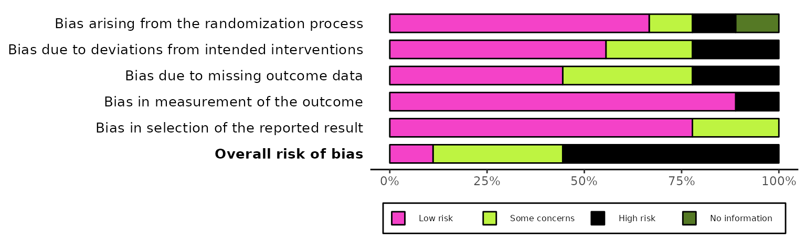
When defining your own colour scheme, you must ensure that the number of discrete judgments (e.g. “Low”/“Moderate”/“High”/“Critical”) and the number of colours specified are the same. Additionally, colours must be specified in order of ascending risk-of-bias (e.g. “Low” -> “Critical”), with the first hex corresponding to “Low” risk of bias.
Traffic light plots (rob_traffic_light())
This function returns a ggplot object displaying the
risk-of-bias judgment in each domain for each study, as well as the
overall risk-of-bias judgement for that study.
Examples:
ROBINS-I tool for non-randomized studies of interventions
rob_traffic_light(data_robins_i, tool = "ROBINS-I")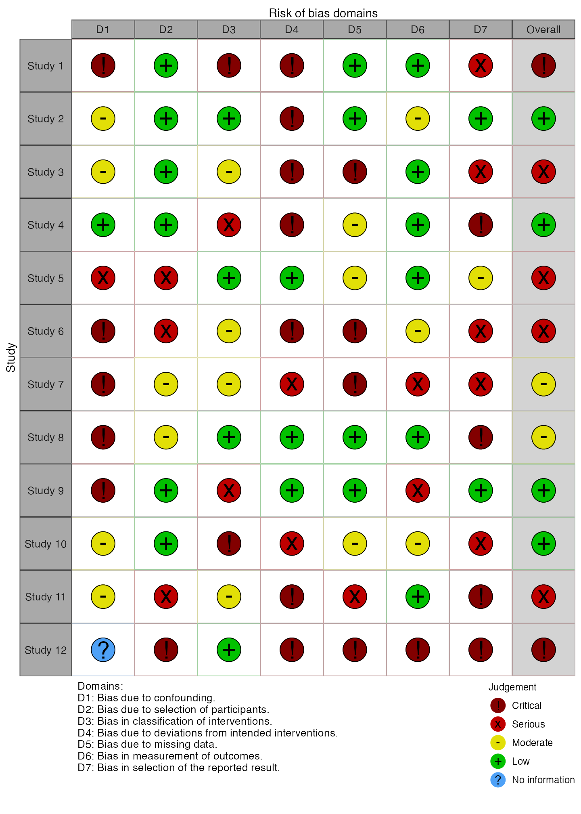
QUADAS-2 tool for diagnostic test accuracy studies
rob_traffic_light(data_quadas, tool = "QUADAS-2")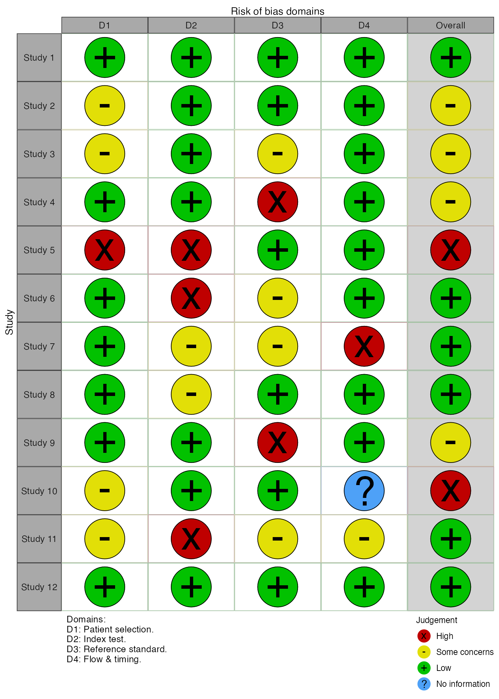
rob_traffic_light() options
Point size (psize)
By default, the size of each point is set to 20. However, if you have a large number of studies, it is useful to be able to reduce the point size so that the resulting graphic is not too large.
# Generate larger dataset
data <- rbind(data_rob2, data_rob2)
data$Study <- paste("Study",seq(1,18))
# Plot with reduced point size
rob_traffic_light(data, tool = "ROB2", psize = 10)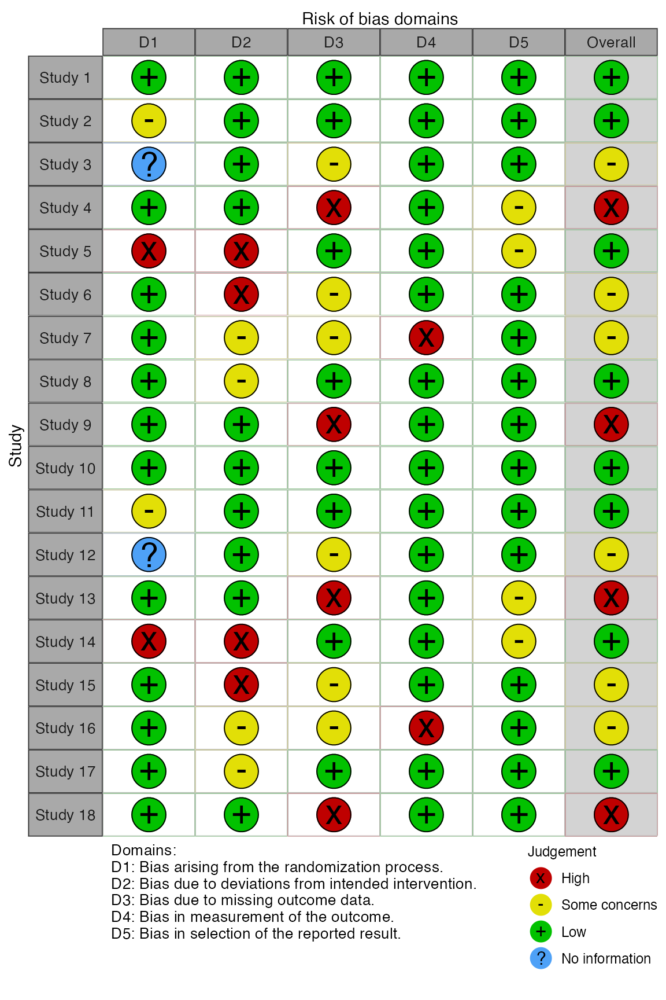
Colour scheme (colour)
NB: Please note the non-US English spelling of colour
The colour argument of both plotting functions allows
users to select from two predefined colour schemes, “cochrane” (default)
or “colourblind”, or to define their own palette by providing a vector
of hex codes.
For example, to use the predefined “colourblind” palette:
rob_traffic_light(data = data_rob2, tool = "ROB2", colour = "colourblind")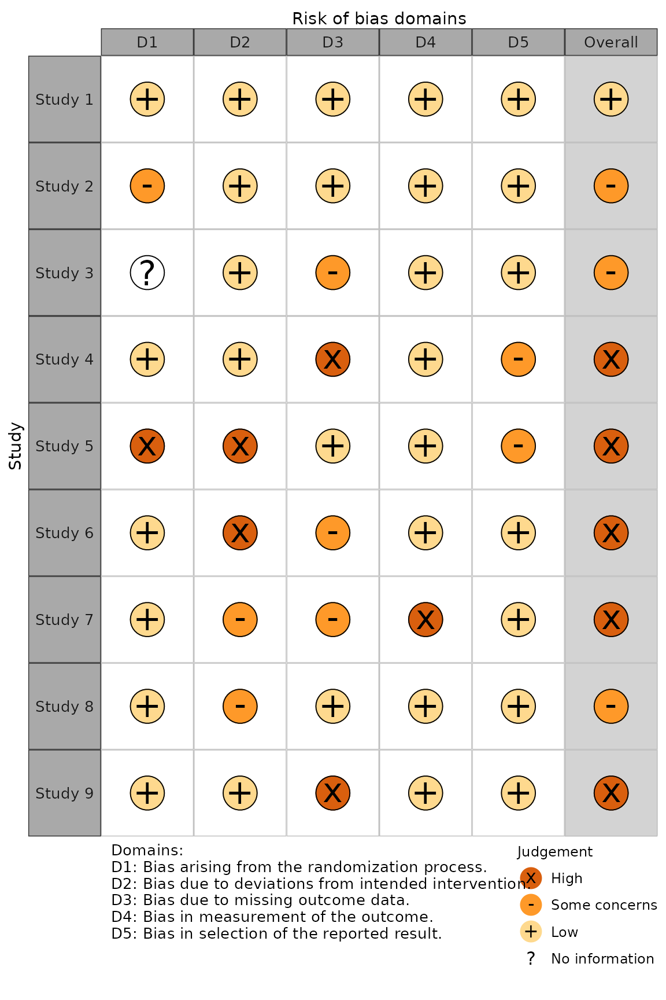
And to define your own colour scheme:
rob_traffic_light(data = data_rob2, tool = "ROB2", colour = c("#f442c8","#bef441","#000000","#557925"))
When defining your own colour scheme, you must ensure that the number of discrete judgments (e.g. “Low”/“Moderate”/“High”/“Critical”) and the number of colours specified are the same. Additionally, colours must be specified in order of ascending risk-of-bias (e.g. “Low” -> “Critical”), with the first hex corresponding to “Low” risk of bias.
The “Generic” template
Motivation
This template offers increased flexibility in the domains that are included in the plot. It can handle any number of user defined domains and uses the user defined column headings as domains titles in the resulting figures.
Varying numbers of domains
The "Generic" option can handle varying numbers of
columns, as authors using the ROB1 assessment tool frequently add or
remove bias domains within this tool. However, we would
discourage authors from doing so with any tool other than ROB1.
Authors using other published tools (ROB2, QUADAS-2, ROBINS-I) should
use the stricter templates presented above to ensure they conform with
the guidance.
Domain names
For the other tools listed above, the names of the columns containing
the domain-level risk of bias judgments are not important. However, this
is not the case when using the "Generic" template.
Compare for example, the first row of the data_rob2 and
the data_rob1, and the resulting figures.
colnames(data_rob2)
#> [1] "Study" "D1" "D2" "D3" "D4" "D5" "Overall"
colnames(data_rob1)
#> [1] "Study"
#> [2] "Random.sequence.generation"
#> [3] "Allocation.concealment"
#> [4] "Blinding.of.participants.and.personnel"
#> [5] "Blinding.of.outcome.assessment"
#> [6] "Incomplete.outcome.data"
#> [7] "Selective.reporting"
#> [8] "Other.sources.of.bias"
#> [9] "Overall"The domain columns (Columns 2-6) in the ROB2 example have been given arbitrary names of D1-D5, as they will be overwritten by the function to correspond to the correct domain titles as per the ROB2 guidance.
In contrast, the domain columns (Columns 2-8) in the ROB1 example use
their true title as the column heading, as these will be used in the
figures produced by rob_summary() and
rob_traffic_light(). As an example, suppose we change the
name of the “Random.sequence.generation” column to something else. In
the rob_summary() figure, the title of the first bar is
changed, while in the rob_traffic_light() figure, the
caption is updated to reflect this change.
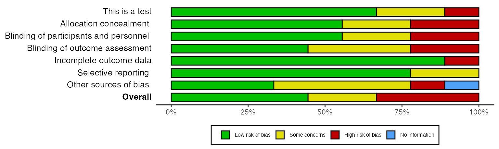
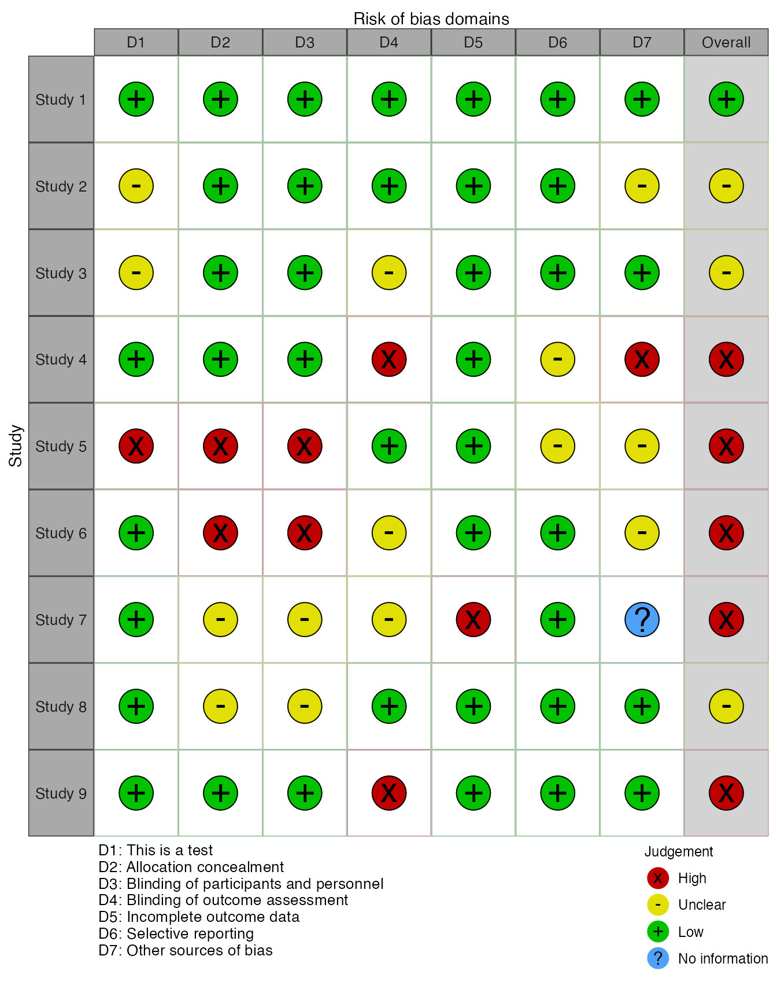